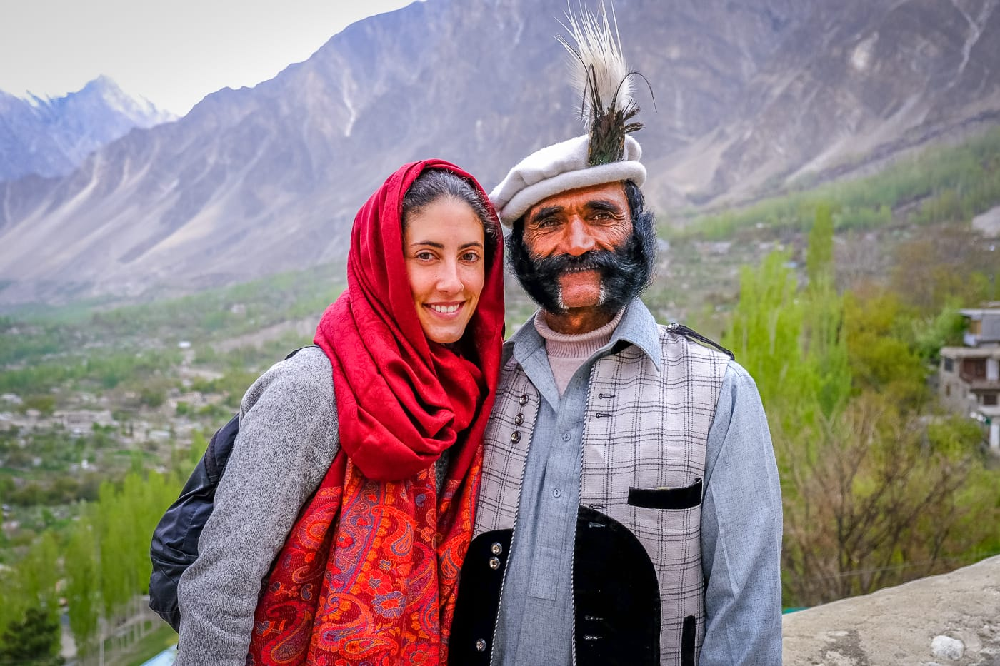

Tajne vitalnosti Hunza naroda
Hunza narod živi duže, zdravije i srećnije – njihova tajna krije se u ishrani,
načinu života i harmoniji sa prirodom.

Hunza narod, smešten u dolini Karakoruma između Pakistana i Indije, vekovima fascinira istraživače svojom dugovečnošću i izuzetnim zdravljem. Oni često žive preko 100 godina, a mnogi među njima ne pate od uobičajenih bolesti modernog sveta, poput kardiovaskularnih oboljenja, dijabetesa ili raka.
Ishrana
Njihov način života i ishrana ključni su faktori koji doprinose ovoj vitalnosti. Hunza narod se oslanja na jednostavnu, prirodnu ishranu bogatu svežim voćem i povrćem, kao i celovitim žitaricama i orašastim plodovima. Posebno su poznati po tome što konzumiraju puno kajsija, koje su bogate vitaminom B17, za koji se veruje da igra značajnu ulogu u borbi protiv raka.Svakodnevni život
Pored ishrane, Hunza narod se bavi fizičkom aktivnošću svakodnevno. Pešačenje po planinskim predelima, rad u poljima i minimalni stres čine njihov život skladnim i zdravim. Takođe, njihova zajednica pridaje veliki značaj mentalnom zdravlju, zajedništvu i duhovnoj ravnoteži.Možda je tajna zdravlja Hunza naroda u njihovom jedinstvenom spoju ishrane, aktivnog života i pozitivnog stava prema životu. U svetu koji se sve više okreće brzim rešenjima i industrijskoj hrani, njihova mudrost nam može pružiti dragocene lekcije o tome kako da živimo duže i kvalitetnije.